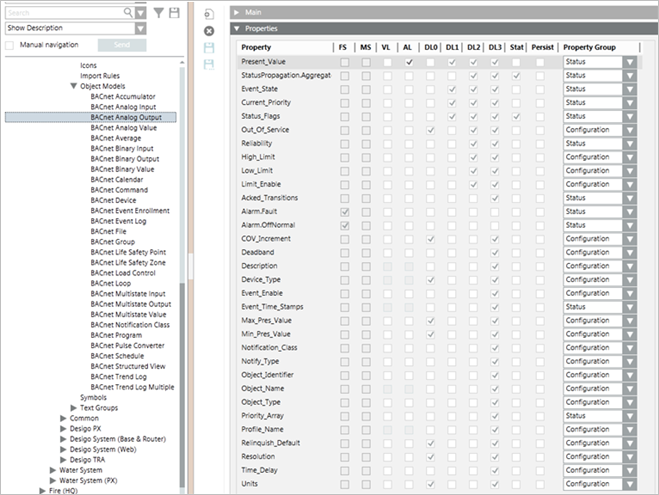
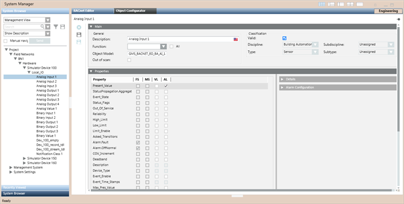

Overview of Reports
A report is a formatted and organized presentation of data.
The reports application lets you configure and produce a variety of reports on the functioning of the management platform.
In order to view the reports application, you must have the Show privilege.
You can use reports as a reference or as a troubleshooting mechanism. Reports are helpful during system operation. For example, you can:
- View a mixed report containing:
- A table displaying details of all active events for a floor of a building
- A table displaying a history report of events
- A trends plot displaying the temperature variations gathered from temperature sensors
- Export trend data for statistical analysis to:
- An XLS file
- A CSV file (according to the EMC requirement)
- Schedule production of a report using macros and reactions
- Send a report to someone using email, to a printer as a .pdf, or to a folder as a file
- Export and import report definitions and logos.
Following are the important reports that you can configure using the Reports application.
Trend Log Report
The trend log report provides information for any trend log object (Offline or Online trend log object) that can provide values at a given interval. The trends log report table provides information on columns Date Time, Value, Unit, and Quality.
You can view Trend log Report data with excel output and with the Pivot table. For more information on viewing Trend log Report with an excel sheet, see the topic Viewing Trend log Report data with excel output and for viewing Trend log Report with the Pivot table, see the topic Viewing Trend log Report data with Pivot table.
To fetch Trend log Report data, you can apply a Time Filter and Condition Filter.
A Time Filter is used to fetch trends for a specific time range, and at specified intervals.
The Condition Filter is applied on either Value or Quality column.
For more information on how to configure Interval-based Trends Report, see the topic Interval-based Trends Report.
Along with Trend log Report data, you can also view Trends Quality Attributes. For more information on Trends Quality Attributes, see the following table:
Enum value | Bit | Description |
TrendTimeShift | 40 | Trend time shift |
TrendLogEnabled | 41 | Trend log enabled |
TrendError | 42 | Trend error |
TrendPurge | 43 | Trend purge |
TrendRollover | 44 | Trend rollover |
TrendValueIsStatus | 45 | Trend value is status |
TrendLogInterrupted | 46 | Trend log interrupted |
TrendStartLogging | 48 | Trend starts logging |
TrendValueReduced | 49 | Trend value reduced |
Objects Report
An Objects report contains an Objects table that displays the run time property values of system objects. To know the property values of any object, such as present value, high limit, low limit and so on, you must configure an Objects report.
Each object has a corresponding object model associated with it. An object model specifies the properties applicable to the object type, configuration attributes of properties, and additional settings like data type of the property, text group configured for the property, commands defined for the property and so on. Each property value has configuration attributes like property name, property descriptor, unit, resolution, minimum and maximum value, and so on. For example, the Present Value property has attributes such as Unit, Resolution, Type, Descriptor and so on. The Objects report also provides information on these attributes.
The properties applicable to an object type can be displayed as columns in the Objects table by setting the appropriate display levels in the Properties expander in the Models and Functions tab. In the following screenshot, the AlarmFault and Alarm.OffNormal properties cannot display as table columns since their display levels are not set.

If a property has array attributes assigned to it, then the text entries in the text group associated with the array attributes of the property can be set as the attribute columns in the Objects table. For example, the Event_Time_Stamps property of the BACnet Analog Input object type has the TxG_BACnetEventTransitionBits Text group associated with its array attributes. You can set the text entries of the text group (To Off Normal, To Fault, To Normal) to display as columns in the Objects table.
Activities Report
The Activities report provides information on system activities over a period of time. For example, you can generate an Activities report
to get the treatment-related information logged in the database for activities.
You can create and configure an Activities report if you want to determine the number of times the present value property of an Analog Input
object has exceeded 100 in the last 24 hours.
In order to monitor the change of value of any property in the activities report, you must ensure that the AL attribute for the property is selected for
the respective Analog Input object. For this you must navigate to the Properties expander in Object Configurator.

Constraints
The following constraints apply to the Activities report.
- You cannot sort or apply Condition filters for the following columns:
No Sorting | No Condition Filter |
Discipline | Error |
Subdiscipline | DPE Name 1 |
Type | DPE Name 2 |
Subtype | Associated Object Description |
Object Description | Associated Object Name |
Object Name | Associated Object Designation |
Object Property | Associated Object Location |
Quality | Associated Object Name (Internal) |
Previous Quality |
|
Object Designation[Application View] |
|
Object Designation[Current View] |
|
Object Designation[Management View] |
|
Object Identifier [Internal] |
|
Object Location |
|
Object Location[Application View] |
|
Object Location[Current View] |
|
Object Location[Management View] |
|
Error |
|
Associated Object Description |
|
Associated Object Name |
|
Associated Object Designation |
|
Associated Object Location |
|
Associated Object Name (Internal) |
|
Alias [Associated Object] |
|
Alias [Object] |
|
Unit |
|
- When you add a Condition filter to the Activities table, you cannot apply the OR operator between two filter expressions that are located on two different columns.
- You can apply the OR operator between two filter expressions set on the same column.
- You cannot apply the NOT operator in the Condition filter for an Activities table. For example, NOT 'Action' = "Add Camera" is invalid.
Event Details Report
The Event Details report provides information related to events and their treatment.
When you run the report, the preliminary details of the event such as Event Time, Event Category, Event Cause, Event ID, Object Description, and Object Designation display as parent records.
Additional information related to the treatment of the event such as Time, Action taken, Message text, User Name, Management Station, Attachment, Value, and Previous Value display as child records.
The child records display only in the Run mode. The total number of available children can be read from the Row Nocolumn.
The number of records that display in the child table depends on the following:
- If a Name filter with wild card characters is applied to the report or a default Name filter is applied, then the latest 1000 records display.
- If a single Name filter without any wild card characters is applied, then all records display. In this case, the Row Number column is empty.
- If multiple Name filters are applied, then the child table is restricted to the latest 1000 records.
You can configure an Event Details report for the following:
- Viewing event details of a particular event using Investigative Treatment.
- Viewing event details of a particular event using Assisted Treatment.
- Viewing event details for specific events using Reports. For example, you can configure an event details report to display all events of type Fault or Life Safety on an Analog Output object for a 24-hour period.
Constraints
The following constraints apply to the Event Details report.
- You cannot sort or apply Condition filters for the following columns:
No Sorting | No Condition Filter |
Discipline | DPE Observer |
Subdiscipline | Event Source |
Type | Observer Description |
Subtype | Observer Name |
Object Description | Observer Designation |
Object Name | Observer Location |
Object Property | Observer Identifier (Internal) |
Object Designation | Event Went |
Object Designation[Application View] |
|
Object Designation[Current View] |
|
Object Designation[Management View] |
|
Object Identifier [Internal] |
|
Object Location |
|
Object Location[Application View] |
|
Object Location[Current View] |
|
Object Location[Management View] |
|
Observer Description |
|
Observer Name |
|
Observer Designation |
|
Observer Location |
|
Observer Identifier (Internal) |
|
Alias [Object] |
|
Alias [Observer] |
|
- When you add a Condition filter to the Event Details table, you cannot apply the OR operator between two filter expressions located on two different columns.
- You can apply the OR operator between two filter expressions set on the same column.
To apply the OR operator on the same column, select the column and the operator, press SHIFT or CTRL, depending on whether you want to select values
listed next to each other or away from each other, and then click Add. - You cannot apply the NOT operator in the Condition filter for an Event Details table.
Events Report
The Events table provides information related to events. It provides information such as Event Time, Event State, Event Category, Event Cause, Event ID, Object Description, and Object Designation.
Constraints
The following constraints apply to the Events report.
- You cannot sort or apply Condition filters on the following columns:
No Sorting | No Condition Filter |
Discipline | DPE Observer |
DPE Observer | Event Source |
Event Source | Observer Description |
Subdiscipline | Observer Name |
Type | Observer Designation |
Subtype | Observer Location |
Object Description | Observer Identifier (Internal) |
Object Name |
|
Object Designation |
|
Object Designation [Application View] |
|
Object Designation [Current View] |
|
Object Designation [Management View] |
|
Object Location |
|
Object Location [Application View] |
|
Object Location [Current View] |
|
Object Location [Management View] |
|
Object Identifier [Internal] |
|
Object Property |
|
Observer Description |
|
Observer Name |
|
Observer Designation |
|
Observer Location |
|
Observer Identifier (Internal) |
|
Alias [Object] |
|
Alias [Observer] |
|
Unit |
|
- When you add a Condition filter to the Event Details table, you cannot apply the OR operator between two filter expressions set on two different columns.
- You can apply the OR operator between two filter expressions set on the same column.
To apply the OR operator on the same column, select the column and the operator, press SHIFT or CTRL, depending on whether you want to select values
listed next to each other or away from each other and then click Add. - You cannot apply the NOT operator in the Condition filter for an Events table.
Trends Plot
The Trends plot provides a graphical representation of the change of value of an object over a period of time.
In order to view the change of value graphically, you must assign a Trend View Definition as a Name filter to the Plot. You cannot add a Condition filter to the Trends Plot.
For example, you can create a Trends Plot if you want to track the change of value of an Analog Input object graphically over a period of 10 hours.
All Logs Report
The All Logs table provides information on system activities and events.
Constraints
The following constraints apply to the All Logs report.
- You cannot apply sorting on the following columns:
No Sorting |
Discipline |
Subdiscipline |
Type |
Subtype |
Source Description |
Source Name |
Source Designation |
Source Location |
Source Designation [Application View] |
Source Designation [Current View] |
Source Designation [Management View] |
Source Location [Application View] |
Source Location [Current View] |
Source Location [Management View] |
Source Identifier [Internal] |
Property |
Quality |
Previous Quality |
Alias [Observer] |
Alias [Source] |
- When you add a Condition filter to the All Logs table, you cannot apply the OR operator between two filter expressions set on two different columns.
- You can apply the OR operator between two filter expressions set on the same column.
To apply the OR operator on the same column, select the column and the operator, press SHIFT or CTRL, depending on whether you want to select
values listed next to each other or away from each other, and then click Add. - You cannot apply the NOT operator in the Condition filter for a Log View table.
- You can only apply the Equal to (=) operator to the following columns in the Condition Filter dialog box.
- Discipline
- Subdiscipline
- Type
- Subtype
- Source Description
- Source Name
- Source Designation
- Source Location
- Source Designation [Application View]
- Source Designation [Current View]
- Source Designation [Management View]
- Source Location [Application View]
- Source Location [Current View]
- Source Location [Management View]
- Source Identifier [Internal]
Reports for Operating Procedures
Reports configured in operating procedure steps allow you to view and enter Event Treatment related information when executed for a selected event from Assisted Treatment.
In addition to the existing reporting elements, you can add form controls to these reports. You create and configure a report for operating procedure steps in the same way as
you would create and configure any report.
When executed in the context of the selected event, the report displays the event treatment related information and allows you to enter information in the form controls.

NOTE:
You cannot use trend plots and trend tables in reports for operating procedures as these elements do not display any data when the report is executed from Assisted Treatment.
You can enter information in the following scenarios:
- The event is treated for the first time; the operating procedure step is configured as repeatable and is in progress.
- You re-select the same event, for a repeatable step that is not yet complete.
If you re-select the same event with a non-repeatable step that is complete, you cannot perform activities such as editing information, sorting entries in tables, or resizing columns.
You can only view and route the information to a file, email, or printer as configured in the report definition.
Information entered in the form controls can be viewed by users on different client computers for the same step in the same event.
However it can be edited only if the step is configured to be repeatable.
You may need to contact the system administrator, if you face either of these issues when working with reports for operating procedures:
- The report is not executed.
- The report does not display the configured table in the Run mode.
- The report is not getting routed to the specified folder.